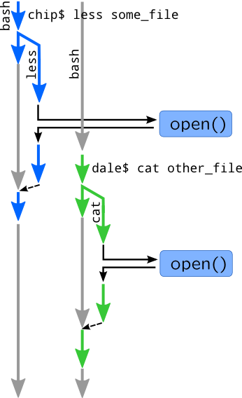

Applying tracing
As we mentioned in Tracing, it is used for statistics collection and performance analysis, dynamic kernel or application debug, system audit. Imagine the situation in which various processes running by two different users are opening files:

What problems can occur and how they are solved by dynamic tracing? Users can complain to very slow opening of a file, so we need to do performance analysis. First of all, we have confirm user complaints by measuring time spent in open(), read() and write() system calls. We can also try to cross-reference slow calls and filesystems on which they occur (by gathering mount paths), if problems are caused by bad NAS or disk. If the problem still exists, than you will need to go down VFS stack, i.e. by measuring time spent in block I/O or in lookup operations.
If user encounters errors while opening files, then you will need to trace errno values. These values are usually returned by system call functions in Linux, or saved into errno variable in DTrace. To determine why system call returns an error, you will need dynamically debug it by checking return values of callees. We will demonstrate it in following section. If users try to attempt files they do not have permissions, we can record errno along with paths and user ids, so by doing that we will perform system audit.
To demonstrate it on real example, we will use following examples and run cat /etc/shadow from some non-root user:
# dtrace -qn '
syscall::open*:entry {
printf("=> uid: %d pid: %d open: %s %lld\n",
uid, pid, copyinstr(arg1), (long long) timestamp);
}
syscall::open*:return {
printf("<= uid: %d pid: %d ret: %d %lld\n",
uid, pid, arg1, (long long) timestamp);
}'
SystemTap version:
# stap -e '
probe syscall.open {
printf("=> uid: %d pid: %d open: %s %d\n",
uid(), pid(), filename, local_clock_ns());
}
probe syscall.open.return {
printf("<= uid: %d pid: %d %d %d\n",
uid(), pid(), $return, local_clock_ns());
}'
Here is sample output:
=> uid: 60004 pid: 1456 open: /etc/shadow 16208212467213 <= uid: 60004 pid: 1456 ret: -1 16208212482430
First of all, we measured time spent for open() system call: 16208212482430 — 16208212467213 = 15217 = 15.2 us. We can also see that user received an error (return code is -1, while in case of correct call it would be positive) and now we may try to seek for a source of a problem. Finally, we have audited attempt to open critical system file /etc/shadow which is forbidden for users. So now we should find user name with id 60004 and politely ask him why he tried to open /etc/shadow file.
We will discuss how trace data may be analysed and what conclusion can be made from it in this module. However, we will not introduce useful kernel or application probes as we will discuss them in modules 4, 5. On the other hand, all examples in following modules will be pure tracers, so you will need to add additional processing of results which will be discussed in this module.